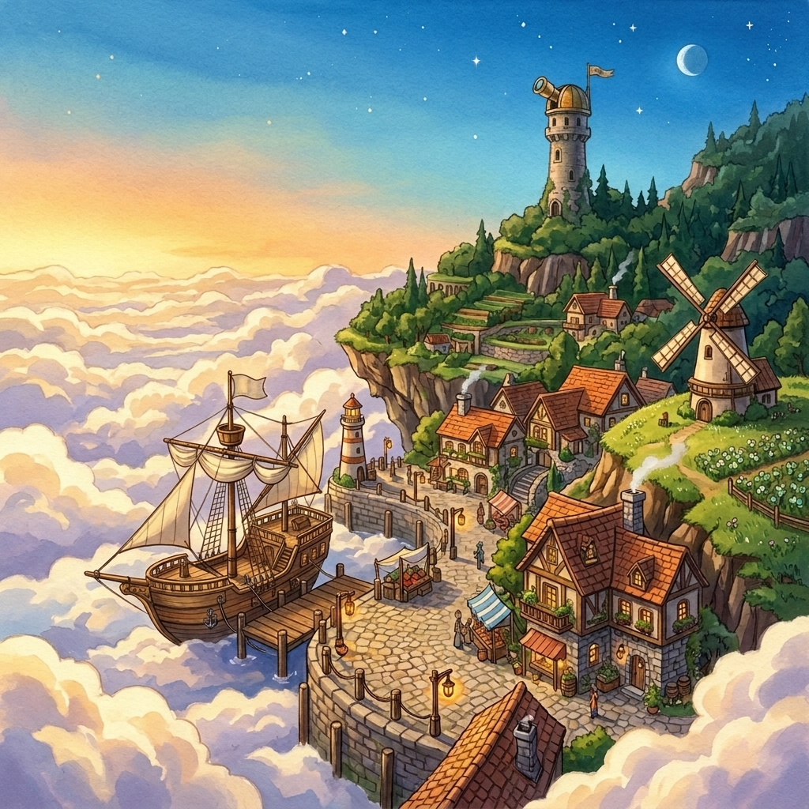

Title Screen
RETRO COZY-GAME OST · 6 TRACKS · 14:00
Cloudport Chronicles
Nostalgic 3/4 sky-island waltz introducing the 5-note Cloudport leitmotif — Magic Music Box chime opener, soaring Dreamy Flute, harp-plucked Magical Guitar, Juno-60 Strings swell, and warm MKS-70 pad.
0:00 / 2:18
Arrangement · 6 native CLAP stems
Bar 1.1